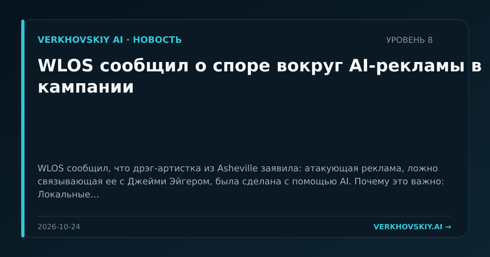

WLOS сообщил о споре вокруг AI-рекламы в кампании
WLOS сообщил, что дрэг-артистка из Asheville заявила: атакующая реклама, ложно связывающая ее с Джейми Эйгером, была сделана с помощью AI. Почему это важно: Локальные кампании получают доступ к синтетическим средствам репутационной атаки. Это делает проблему AI-контента не только федеральной, но и муниципальной инфраструктурой доверия.